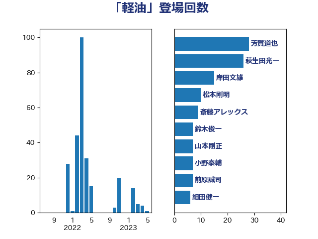

単語「軽油」

| 芳賀道也 | 国民民主党 | 28 回 |
| 萩生田光一 | 自由民主党 | 26 回 |
| 岸田文雄 | 自由民主党 | 15 回 |
| 松本剛明 | 自由民主党 | 10 回 |
| 斎藤アレックス | 国民民主党 | 9 回 |
| 鈴木俊一 | 自由民主党 | 7 回 |
| 山本剛正 | 日本維新の会 | 7 回 |
| 小野泰輔 | 日本維新の会 | 7 回 |
| 前原誠司 | 国民民主党 | 7 回 |
| 細田健一 | 自由民主党 | 6 回 |
| 金子恭之 | 自由民主党 | 5 回 |
| 浜口誠 | 国民民主党 | 5 回 |
| 古川元久 | 国民民主党 | 5 回 |
| 西村康稔 | 自由民主党 | 4 回 |
| 若松謙維 | 公明党 | 4 回 |
| 斉藤鉄夫 | 公明党 | 4 回 |
| 玉木雄一郎 | 国民民主党 | 3 回 |
| 小山展弘 | 立憲民主党 | 3 回 |
| 大串博志 | 立憲民主党 | 3 回 |
| 馬場伸幸 | 日本維新の会 | 2 回 |
| 鈴木義弘 | 国民民主党 | 2 回 |
| 重徳和彦 | 立憲民主党 | 2 回 |
| 道下大樹 | 立憲民主党 | 2 回 |
| 足立康史 | 日本維新の会 | 2 回 |
| 石井苗子 | 日本維新の会 | 2 回 |
| 田村まみ | 国民民主党 | 2 回 |
| 河西宏一 | 公明党 | 2 回 |
| 庄子賢一 | 公明党 | 2 回 |
| 川合孝典 | 国民民主党 | 2 回 |
| 岩田和親 | 自由民主党 | 2 回 |
| 寺田稔 | 自由民主党 | 2 回 |
| 仁木博文 | 無所属 | 2 回 |
| 須藤元気 | 無所属 | 1 回 |
| 金子俊平 | 自由民主党 | 1 回 |
| 里見隆治 | 公明党 | 1 回 |
| 赤羽一嘉 | 公明党 | 1 回 |
| 西銘恒三郎 | 自由民主党 | 1 回 |
| 西田実仁 | 公明党 | 1 回 |
| 緑川貴士 | 立憲民主党 | 1 回 |
| 紙智子 | 日本共産党 | 1 回 |
| 笠井亮 | 日本共産党 | 1 回 |
| 竹内譲 | 公明党 | 1 回 |
| 稲津久 | 公明党 | 1 回 |
| 礒崎哲史 | 国民民主党 | 1 回 |
| 石井拓 | 自由民主党 | 1 回 |
| 石井啓一 | 公明党 | 1 回 |
| 田名部匡代 | 立憲民主党 | 1 回 |
| 江島潔 | 自由民主党 | 1 回 |
| 横沢高徳 | 立憲民主党 | 1 回 |
| 松野博一 | 自由民主党 | 1 回 |
| 岸真紀子 | 立憲民主党 | 1 回 |
| 岡本三成 | 公明党 | 1 回 |
| 岡本あき子 | 立憲民主党 | 1 回 |
| 山本左近 | 自由民主党 | 1 回 |
| 大西健介 | 立憲民主党 | 1 回 |
| 大島敦 | 立憲民主党 | 1 回 |
| 塩田博昭 | 公明党 | 1 回 |
| 城井崇 | 立憲民主党 | 1 回 |
| 伊藤渉 | 公明党 | 1 回 |
| 中野英幸 | 自由民主党 | 1 回 |
| 中川貴元 | 自由民主党 | 1 回 |